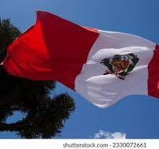
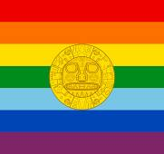

Day 4: Exploring Peru
Introduction to Peru
Peru is a country rich in history and natural beauty. Located in South America, it is home to ancient ruins, towering mountains, and vast rainforests. The capital city, Lima, is known for its colonial architecture and vibrant cultural scene.
This image captures the essence of Peru's ancient heritage and stunning landscapes.
Big Cities
Peru's major cities include Lima, Arequipa, and Cusco. Lima, the capital, is the largest city and a cultural and economic hub. Arequipa is known as the "White City" because its buildings are made from white volcanic stone. Cusco was the historic capital of the Inca Empire and is a gateway to Machu Picchu.
This image shows the busy streets of Lima, where old colonial buildings mix with modern life.
Ancient Civilizations
Peru is famous for its ancient civilizations, especially the Inca. The most famous site is Machu Picchu, a UNESCO World Heritage Site and one of the New Seven Wonders of the World. Other important archaeological sites include the Nazca Lines and the ruins of Chan Chan.

This image shows Machu Picchu, the ancient Inca city that sits high in the Andes Mountains. It is one of the most famous places in the world.
Culture and Languages
Spanish is the official language of Peru, but many indigenous languages, like Quechua and Aymara, are also spoken. Peru is known for its delicious and diverse food, including dishes like ceviche, lomo saltado, and the traditional Andean dish, cuy. The country is also famous for its colorful festivals, which combine indigenous and Spanish traditions.
This image shows some of Peru's most popular dishes, including ceviche, a dish made from fresh raw fish marinated in lime juice.
Heroes
Peru has many national heroes and cultural icons. José de San Martín was a key figure in the struggle for independence from Spain. Mario Vargas Llosa is a famous author who won a Nobel Prize for his books that explore the life and culture of Peru.
This image shows José de San Martín, one of the leaders who helped Peru gain independence from Spain.
Natural Wonders
Peru is also home to amazing natural wonders. The Amazon Rainforest covers a large part of the country and is full of wildlife. The Andes Mountains run through Peru, with peaks that reach over 20,000 feet high. Lake Titicaca, the highest navigable lake in the world, sits on the border between Peru and Bolivia.
This image shows the lush, green Amazon Rainforest, which is home to countless species of plants and animals.
Regions, Their Flags, and Capital Cities in Peru
| Region | Flag | Capital City |
|---|---|---|
| Lima |  |
Lima |
| Arequipa |  | Arequipa |
| Cusco |  | Cusco |
| Puno | Puno |
Did You Know?
Did you know that Peru is home to the world's largest flying bird, the Andean Condor?
Did you know that the Amazon River, which flows through Peru, is the second-longest river in the world?
Did you know that the potato was first domesticated in Peru over 7,000 years ago?
Did you know that Peru has more than 3,000 different varieties of potatoes?
Did you know that Lake Titicaca in Peru is the highest navigable lake in the world?